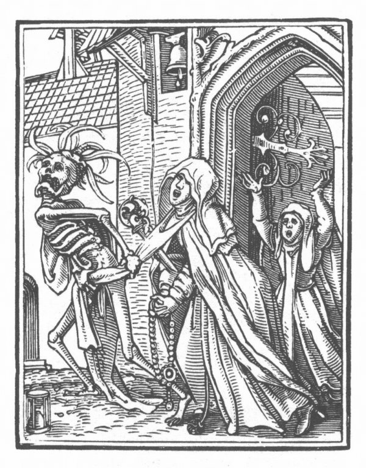

|  | Miért táncolt 1518 nyarán négyszáz strasbourgi az utcán addig, amíg össze nem rogytak? Vajon melyik betegség kezeléseként kellett liszteszsákkal csapkodni a pácienst? Miért hívták a 15. század végén francia betegségnek a szifiliszt? Melyik ma is gyakori betegséget hitték a boszorkányok átkainak? Öt középkori betegségnek eredtünk a nyomába. |